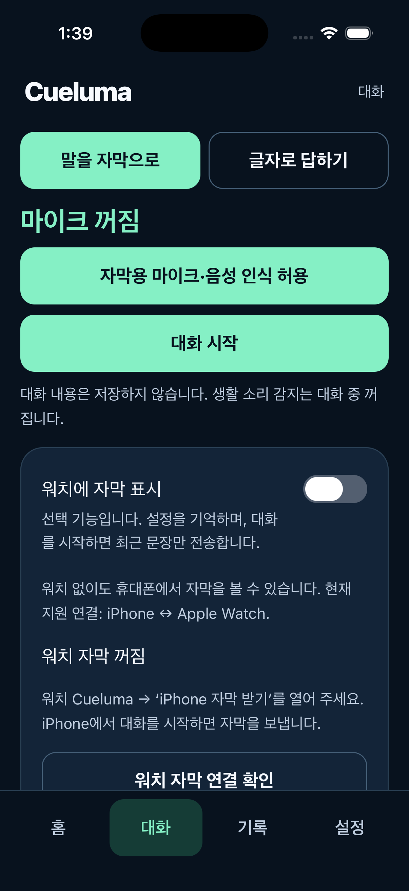
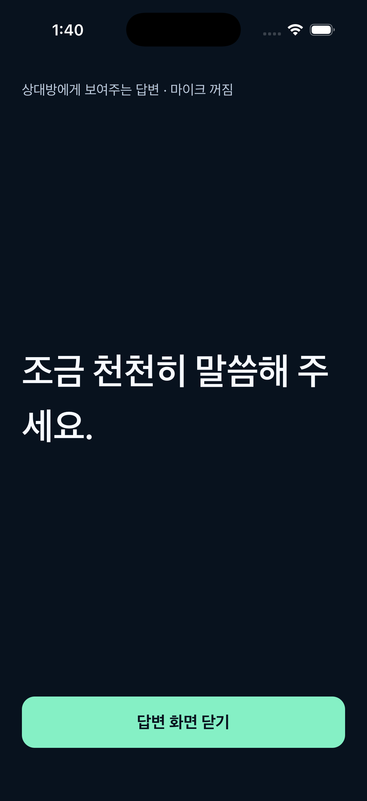

CUELUMA SUPPORT
말을 글자로 보고,
글자로 답하세요.
Cueluma는 청각장애인·난청 사용자가 대화와 생활 소리를 글자와 진동으로 확인하도록 돕습니다. 워치가 없어도 휴대폰에서 사용할 수 있습니다.
대화 자막 시작하기
- 휴대폰에서 Cueluma를 열고 하단 대화를 누릅니다.
- 마이크·음성 인식 권한을 허용하고 대화 시작을 누릅니다.
- 상대방이 마이크 가까이에서 말하면 상대방의 말 영역을 확인합니다.
- 끝나면 대화 종료·내용 지우기를 누릅니다.
기기가 한국어 온디바이스 음성 인식을 지원해야 합니다. Android 자막은 Android 12 이상과 지원되는 온디바이스 음성 서비스가 필요합니다. 지원되지 않는 경우 글자 답변을 사용할 수 있습니다.
글자로 답하기
글자로 답하기에서 문장을 입력하거나 준비된 문장을 선택한 뒤 답변 크게 보여주기를 누르세요. 큰 글자 화면을 상대방에게 보여 주면 됩니다. 이때 자막 마이크는 중지됩니다.
읽기 편하게 조절하기
자막 글씨를 보통·크게·더 크게로 조절할 수 있습니다. 읽는 위치 유지로 문장을 고정하고 최신 문장으로 돌아갈 수 있습니다. 글씨 크기와 워치 전송 설정은 앱을 다시 열어도 유지됩니다. 앱 재실행만으로 마이크가 켜지지는 않습니다.


워치에서 확인하기
현재 지원 조합은 iPhone–Apple Watch, Android–Wear OS입니다. 휴대폰과 워치 양쪽에 Cueluma를 설치하세요. iPhone–갤럭시 워치 교차 연결은 지원하지 않습니다.
iPhone 자막을 Apple Watch로 받기
- 워치에서 iPhone 자막 받기를 엽니다.
- iPhone의 대화 화면에서 워치에 자막 표시를 켭니다.
- 워치 자막 연결 확인을 누른 뒤 대화 시작을 누릅니다.
이 방식은 iPhone 마이크를 사용합니다. 워치 수신 화면을 활성 상태로 유지하세요. iPhone 화면을 잠그려면 대화 화면에서 화면을 잠가도 계속 듣기를 직접 켜세요. iPhone 전원을 끄면 전송이 중지됩니다. 통화나 OS 중단 후에는 상태를 확인하고 다시 시작해야 할 수 있습니다.
Apple Watch 마이크로 직접 듣기
워치에서 워치로 듣기 → 대화 시작을 누릅니다. 이 경로는 워치 마이크와 내장 모델을 사용합니다. 처음에는 한국어 자막 준비 중이 표시되며 약 81MB의 추가 여유 공간이 필요합니다. 인터넷에서 모델을 다운로드하지 않습니다. 준비 중 화면을 활성 상태로 유지하고, 중단되면 여유 공간을 확인한 뒤 다시 시작하세요.
손목을 내리거나 시계 화면·다른 앱으로 이동하면 동작이 제한될 수 있습니다. 워치 단독 인식 품질과 장시간 동작은 기기에 따라 달라집니다.
Android 자막을 Wear OS로 받기
워치에서 휴대폰 자막 받기를 열고 Android에서 워치 전송을 켠 뒤 대화를 시작합니다. 양쪽 자막 화면을 열어 두세요. Android 화면 잠금·앱 전환 시 자막이 중지됩니다. Wear OS 단독 음성 인식은 현재 제공하지 않습니다.
생활 소리 알림
- 홈의 감지할 소리 설정에서 초인종·노크 중 필요한 항목을 선택합니다.
- 마이크·알림 권한을 허용하고 소리 감지 시작을 누릅니다.
- 소리 인식 확인에서 입력 상태를 보고 민감도와 반복 알림 간격을 조절합니다.
먼저 실제 집의 소리를 여러 거리와 소음 환경에서 시험하세요. 감지 점수는 정확도 수치가 아닙니다. 자막과 생활 소리 감지는 마이크를 번갈아 사용하므로, 대화가 끝난 뒤 감지가 필요하면 홈에서 다시 시작합니다. 사용자 지정 소리 등록은 현재 제공하지 않습니다.
설정 → 워치 → 시험 알림 보내기는 연결과 진동을 확인하는 기능입니다. [시험] 알림은 실제 소리 감지 결과가 아닙니다.
자주 묻는 질문
휴대폰에도 자막이 나오지 않아요.
마이크·음성 인식 권한, 한국어 온디바이스 지원 여부, 대화 시작 상태를 확인하세요. 소리 감지나 다른 앱이 마이크를 사용 중이면 중지한 뒤 다시 시도하세요.
휴대폰에는 나오지만 워치에는 안 나와요.
두 앱의 설치·버전·페어링을 확인하고 워치에서 올바른 수신 화면을 여세요. 휴대폰의 워치 전송을 켜고 ‘워치 자막 연결 확인’을 누릅니다. iPhone 전원 종료와 화면 잠금은 서로 다릅니다.
손목을 내리면 자막이 멈춰요.
워치 화면이 비활성화되면 OS가 마이크나 실시간 수신을 제한할 수 있습니다. 화면을 깨운 뒤 앱 상태를 확인하고 필요하면 다시 시작하세요. 항상 켬 화면 설정만으로 백그라운드 자막 동작이 보장되지는 않습니다.
인식이 부정확해요.
발화자와 마이크의 거리를 줄이고 TV·음악·겹치는 말을 줄여 비교하세요. 중요한 내용은 상대방에게 다시 확인하세요. 현재 실제 환경의 정확도·배터리 수치는 제공하지 않습니다.
기록과 대화를 어떻게 지우나요?
‘기록 → 모든 기록 삭제’로 생활 소리 기록을 지웁니다. 연결되지 않은 워치는 다시 연결한 뒤 삭제가 반영됩니다. ‘대화 종료·내용 지우기’는 자막과 답변을 지웁니다. 원본 마이크 음성과 실제 대화는 파일이나 개발자 서버에 저장하지 않습니다.
결제나 회원가입이 필요한가요?
현재 버전에는 회원가입, 광고, 결제, 구독 기능이 없습니다. 다른 언어의 음성 인식은 현재 지원하지 않습니다.
고객지원
사용 중 문제나 접근성 개선 의견을 보내 주세요.
기기명·OS·앱 버전과 문제가 생긴 순서를 알려 주시면 확인에 도움이 됩니다. 실제 대화 녹음이나 민감한 자막은 보내지 않아도 됩니다.